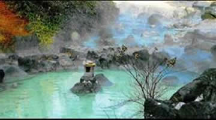
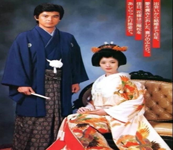
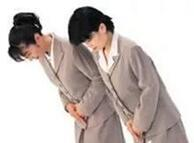

亲近大自然是日本文化中非常显著的一个特征，在日本民族的发展过程中，日本人民始终坚持着的基本态度就是顺从自然、崇拜自然。这一文化特点表现在多个方面:在日本的姓氏方面，大部分的日本人都以天地山川、自然草木作为自己的姓氏，如文本中舞女的名字就是薰子，还有其他人的名字是千代子、百合子;在服饰花纹方面，日本人也偏爱使用菊花、竹子之类的自然植物花纹，甚至是古代武将甲胄上的刺绣，也都是花草的图案，这也体现出了日本对于大自然的亲近。
日本地处环太平洋地震带上，有着丰富的地热资源。日本的温泉文化是日本生活文化的一部分，由汤治发展而来的轻松且多样化的温泉利用形式作为一种社会习惯被传承了下来，遍布在日本各地，泉质多样的温泉成为了促进人们生活和交流的一个平台，在有其独特的地方文化和传统风俗，接下来我们就来讲一讲日本温泉中蕴含的文化。

温泉和日本的宗教文化有着很深的联系，传说起初温泉能够治疗疾病的功效便是由一名僧人发现的，而且在公元8世纪，当时的日本人在虔诚礼佛之前都会沐浴净身，清洗身上的污垢，洗涤灵魂，用以表达对神的敬仰和感谢，因此人们对温泉有一种崇拜的心理。所以在当时的日本寺院会建在许多温泉地的旁边，温泉主要被僧侣们用作净身，治疗和进行宗教活动，比如在洗佛像的汤屋内为民众施浴，传扬佛教行善积德的教义。由于历史上很多著名的温泉都是由僧侣发现的，所以许多温泉地都带上宗教的色彩，许多有关温泉的神话传说也多与神明相关，所以温泉文化有着浓重的宗教色彩。
一开始汤宿是不提供饮食的，但是随着游客越来越多，商业圈逐渐成型，形成了现如今的温泉地或者温泉乡，关于温泉的饮食文化也逐渐形成了一定的规模。日本人喜欢茶道，温泉泡茶也是日本茶道的一个重要组成部分。用温泉水泡出来的茶汤色明亮，不掩盖茶叶的清香，色香味。
日本温泉饮食文化并不是利用温泉水烹制美食，而是料理的风格与温泉相近，让饮食文化与温泉文化融合为一体，在优雅的环境中烹茶煮酒，进泡温泉，消除身心的疲惫，在穿着和服品尝着日本的寿司刺身，让人置身在传统的日本温泉文化当中，享受着温泉温泉美食文化带来的和谐和静谧。温泉饮食所注重的便是发挥素材本身的特色，注重食物的色彩和造型，不仅给人眼睛上的享受，也能够让人有精神上的享受，而注重食材的搭配以及营养均衡也能够为人们的身体健康增添助力。日本温泉饮食文化以清淡为主，泡温泉之后人的内火较旺，所以利用食材本身的特色会给泡过温泉的人一种清爽感。
随着泡温泉的游客越来越多，单纯的泡温泉以及饮食享受已经远远满足不了人们日益增长的精神文化需求，所以温泉地的景观建设也成为了人们选择泡温泉地点的一个重要因素。日本的景观文化模仿精炼了日本庭院的元素，由始至终贯穿了日本园林“枯山水”的意境表达，在有限的空间内描绘出了广袤的大自然，没有盲目过度的开，破坏生态文明，这一点值得世界各国的人学习参考。日本很会根据温泉地周边的环境因势利导，打造相关的温泉景观，比如人文景观和自然景观，都会依据当地相关的环境进行打造，并且在打造的过程中强调自然景观，避免人工制造的痕迹，力求给泡温泉的人营造一种安逸舒适的致美境界。
和服是日本人的传统民族服装，也是日本人最值得向世界夸耀的文化资产之一。和服实际上源自中国汉唐服饰，后经日本历代修改，逐渐形成日本现代的和服式样，但基本上与汉唐服饰并无太大区别。和服的穿着技巧，乃是随着时代的风俗背景，经过琢磨考验，蕴育而生。衣上高雅而优美的图案，源自日本民族对山水的欣赏及对风土的眷恋，乃至於对人本精神与情境的细腻感受。
公元8世纪，中国唐代服装传入日本，对日本的和服产生了很大影响。各种和服在款式和穿着方式上有"大同"，也有"小异"，正是这些"小异"，具有服装的一项重要功能：显示身份、年龄、所属的社会阶层。以女性的和服为例，这种"小异"主要表现在袖子上。和服的袖子大致分为"黑留袖"、"色留袖"、"本振袖"、"中振袖"，等等。
1)"留袖"，即袖子相对较短。
2)"黑留袖"和服往往点缀有精致的花纹，它是中年妇女的礼服，一般在比较隆重、庄严的场合，如婚礼、宴会时穿着。
3)"色留袖"是有各种颜色的和服，穿着者比穿"黑留袖"的人年轻，也是隆重场合时穿着的礼服。
4)"中振袖"是未婚的日本青年妇女的传统服装，比较豪华，一般只在庆贺典礼、毕业，以及新年时穿着（今天，即使在这种时候也很少有人穿着这种和服）。"振袖"就是长袖，往往长达1米左右，垂至脚踝。
5)另外，还有一种被称为"色无地"的和服，在平时穿着。"色无地"没有花纹图案，但有颜色。
通气，是和服的一大优点和特征，因此和服的袖口、衣襟、衣裾均能自由开合。不过，这种开合，尤其是衣襟的开合，有许多讲究。不同的开合，具有不同的含义，显示穿着者不同的身份。例如，艺人在穿着和服时，衣襟是始终敞开的，仅在衣襟的"V"字型交叉处系上带子。这种穿着方式，不仅给人以一种和服似脱而未脱的感觉，显示一种含蓄的美，而且能显示从事该职业的妇女的身份。反之，如果不是从事该职业的妇女在穿着和服时，则须将衣襟合拢。但即使是合拢衫襟，其程度也有讲究，并以此显示穿着者的婚姻状况：如果是已婚的妇女，那么衣襟不必全部合拢，可以将靠颈部的地方敞开。但如果是未婚的姑娘，则须将衣襟全部合拢。事实上，和服的穿着有着如此之多的讲究，以至在日本有着专门教人如何穿着和服的"教室"。
众所周知，日本是一个十分注重礼仪文化的民族，经常面带笑容，行鞠躬礼，在态度上给人的第一印象就很舒服。日本社会非常重视礼仪，在日本人的日常工作、学习和生活中，和亲近感相比，更要求恭敬礼貌的态度。日本人见面的社交礼仪总的来说可以用这样几句话来概括：为人处世谦让有理，微笑长挂脸上；见面问好行礼，谦让礼貌中规中矩；待人接物说话客气，交谈乐于轻声细语。
(1) 见面之礼
日本人相互见面多以鞠躬为礼。比较熟悉的人见面互相鞠躬以二三秒钟为宜；如果遇见好友，腰弯的时间要稍长些；在遇见社会地位比较高的人和长辈的时候，要等对方抬头以后把头抬起来，有时候甚至要鞠躬几次。

(2) 送礼之礼
日本人对礼品讲究包装，礼品要包上好几层，再系上一条漂亮的缎带或纸绳。日本人认为，绳结之处有人的灵魂，标志着送礼人的诚意。接受礼品的人一般都要回赠礼品。
日本人一般不当面打开礼品包装，当然你接到日本人送的礼物时，也不要主动打开看，除非对方要求你打开。如果日本人送你礼物，不要马上接过礼物，等主人让一两次后再收，并向他表示感谢，双手接过礼物。
(3) 用餐之礼
入座礼仪: 来到餐厅，通常是年纪最大的先入席。若有宾客，就由宾客先行。正式宴会，晚辈要比长辈先到。入包厢后，主人或上司应坐在靠内离门口最远的地方，职位最基层的人，坐在靠近门口的地方，方便传菜或关门。私人聚会，由买单者坐在离门口近的地方。
饮酒礼仪: 吃日本料理时通常在用餐时喝酒，且会在互相祝酒后才开始用餐。一群人去喝酒时，第一杯要等大家举杯说“干杯”后才能喝。干杯时，酒杯要举至与眼睛同高。两人对饮，先帮对方斟酒，再由对方帮自己斟，不能自己斟酒。喝酒时，如果有人要您倒酒，应先喝完杯中剩下的酒，再接受敬酒。接受敬酒时，以右手持杯，左手端着酒杯底部。滴酒不沾的人，在喝日本酒时，可将酒杯倒盖，这是一种礼节。
(4) 商务之礼
到日本从事商务活动，宜选择在2-6月，9-11月，其它时间当地人多休假或忙于过节。
日本人在商务活动中很注意名片的作用，他们认为名片表明一个人的社会地位，因此总是随身携带。
日本商人比较重视建立长期的合作伙伴关系。他们在商务谈判中十分注意维护对方的面子，同时希望对方也这样做。
在日本发信时，邮票不能倒贴，倒贴邮票表示绝交，装信也要注意，不要使收信人打开后看到自己的名字朝下。
在商品的颜色上，日本人爱好淡雅，讨厌绿色，忌用荷花、狐狸（贪婪）、獾子（狡诈）等图案。
日本人有极强的时间观念，因此，约会时要准时到场。
是日本人的一种丧葬风俗，依据逝者死去的时间，再加以天干地支算出来的时间，普通以为是人逝世后的第七日。尔后每七天一祭，依次类推，“三七”即逝后的第二十一天，“五七”即逝后的第三十五天，“七七”即逝后的四十九天，至此完毕。今天，万寿菊墓地网就为大家详细揭秘头七和七七的习俗。
在丧葬中，对于葬礼是有讲究的，一般人过世后，头七、，三七，五七，百天有什么讲究呢？
头七由儿子办理、烧纸钱、烧香、备家畜菜肴奠祭
三七由女儿办理、烧纸钱、烧香
五七由出嫁孙女办理、烧纸钱、烧香
七七为满七、由儿子办理、烧纸钱、烧香、备家畜菜肴奠祭
一般七七和头七的祭奠让是不一样，但是在中国自古的丧葬习俗中，出殡日起三天原坟的风俗,即:在墓公开葬的需到墓地，上梁、摆供品、上香、踩院子、烧纸等程序。
即使对于日本人而言，艺伎这个群体，是十分神秘的存在。因为神秘，所以艺伎的世界令人充满好奇。百多年前，艺伎作为酒席间助兴的卖艺人，其实一点也不神秘。在日本江户中期，这种卖艺人中有男人也有女人，男人被称为「艺者」，女人则被称为「艺子」。江户时代「艺者」、「艺子」一起同台演出，生意十分兴隆。但到明治之后，男性的「艺者」逐渐减少并直至消失，只余下女性的「艺子」，即现在所称的「艺伎」。艺伎变成了一个纯粹的女性群体，且随着现代社会的发展，艺伎的人数也在逐年减少，于是由百多年前最开始的市井娱乐，演变成现在越来越神秘莫测、曲高和寡的「日本传统文化」。